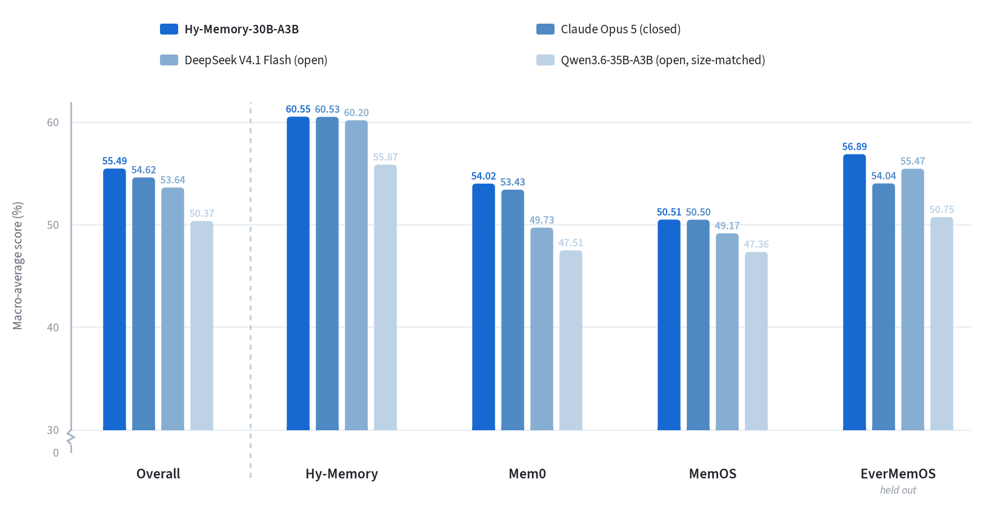
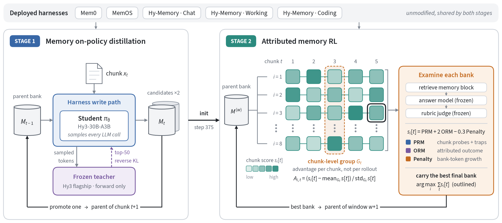

<h1>Hy-Memory-30B-A3B-FP8</h1> <strong>Tencent Hunyuan</strong>
---
Model Introduction
Hy-Memory-30B-A3B-FP8 is the FP8-quantized version of Hy-Memory-30B-A3B, optimized for efficient vLLM deployment.
Hy-Memory-30B-A3B is a compact long-term-memory writer model (~3B active parameters) developed by Tencent Hunyuan to execute the write path inside external memory frameworks. It directly replaces the general-purpose LLM inside Mem0, MemOS, and Hy-Memory (covering Chat, Working, and Coding scenarios), deciding what information to retain, how precisely to represent it, and how new evidence should update the persistent memory bank. The model is trained in two stages—Memory On-Policy Distillation (OPD) followed by Attributed Memory Reinforcement Learning—and transfers directly to unseen memory frameworks such as EverMemOS.

<em>Cross-harness macro-average scores on the fixed 20% benchmark matrix. Each harness score averages six metrics equally; Overall averages the four harnesses equally. EverMemOS is held out from training.</em>---
Two-Stage Training

<em>Figure 1: Hy-Memory-30B-A3B is trained inside the same deployed harness configurations in both stages. OPD supplies dense teacher supervision on student-written state chains; RL examines the resulting banks, assigns chunk-level credit, and carries the selected bank across windows. In the rollout grid, each cell is the bank after chunk t of rollout i, shaded by its chunk score s_i[t]. Advantages are normalized within each column (dashed: one chunk-level group), so the best rollout can differ from chunk to chunk. The outlined cell is the final bank with the highest sum_t s_i[t], which becomes the parent of the next window.</em>---
Experiments
Evaluation Principles
The evaluation changes only the memory writer. For each comparison, the harness version and prompts are fixed, retrieval configuration is fixed, and the answer model, judge, and other framework-side components are held fixed. Throughout this report, every reference to a DeepSeek Flash endpoint denotes DeepSeek V4.1 Flash. Decoding settings are matched where APIs permit, each writer builds its own bank from an empty state, and test examples and scoring rules are identical.
For computational efficiency, every benchmark in the main four-harness matrix is evaluated on a fixed 20% subsample. Each harness score is the equal-weight average of six metrics: LoCoMo Judge, LongMemEval (LME), PersonaMem-v2 (PM-v2), Travel SPS, Shopping PS, and Code Memory Bench (CMB). CMB is itself the equal-weight average of two repository QA evaluations. The overall score is the equal-weight average of the four harness scores.
Final Cross-Harness Results
| Memory writer | Mem0 | Hy-Mem. | MemOS | EverMem. | Avg. |
|---|---|---|---|---|---|
| Hy-Memory-30B-A3B | 54.02 | 60.55 | 50.51 | 56.89 | 55.49 |
| Claude Opus 5 | 53.43 | 60.53 | 50.50 | 54.04 | 54.62 |
| DeepSeek V4.1 Flash | 49.73 | 60.20 | 49.17 | 55.47 | 53.64 |
| Hy3 | 45.99 | 58.06 | 50.19 | 52.30 | 51.63 |
| Qwen3.6-35B-A3B | 47.51 | 55.87 | 47.36 | 50.75 | 50.37 |
| Hy3-A3B Base | 40.20 | 50.39 | 49.05 | 50.98 | 47.66 |
| Qwen3-30B-A3B | 39.81 | 45.67 | 45.44 | 46.57 | 44.37 |
Table 1: Six-metric means on fixed 20% benchmark subsamples. The macro average weights the four harnesses equally.
Detailed Benchmark Results
Tables 2–5 report the six benchmark scores used to compute each harness mean in Table 1 on the same fixed 20% benchmark subsamples.
Table 2: Detailed results on the Mem0 harness
| Writer | LoCoMo | LME | PM-v2 | Travel | Shop. | CMB | Avg. |
|---|---|---|---|---|---|---|---|
| Hy-Memory-30B-A3B | 59.54 | 73.00 | 51.62 | 54.51 | 18.33 | 67.13 | 54.02 |
| Claude Opus 5 | 69.47 | 66.00 | 53.58 | 42.98 | 17.78 | 70.74 | 53.43 |
| DeepSeek V4.1 Flash | 58.78 | 69.39 | 49.56 | 35.07 | 16.67 | 68.92 | 49.73 |
| Hy3 | 41.22 | 62.00 | 44.44 | 46.87 | 17.22 | 64.16 | 45.99 |
| Qwen3.6-35B-A3B | 50.00 | 69.00 | 49.38 | 36.39 | 20.00 | 60.30 | 47.51 |
| Hy3-A3B Base | 50.00 | 47.00 | 40.82 | 37.91 | 14.44 | 51.03 | 40.20 |
| Qwen3-30B-A3B | 46.18 | 56.00 | 42.32 | 31.98 | 16.67 | 45.68 | 39.81 |
Table 3: Detailed results on the Hy-Memory harness
| Writer | LoCoMo | LME | PM-v2 | Travel | Shop. | CMB | Avg. |
|---|---|---|---|---|---|---|---|
| Hy-Memory-30B-A3B | 73.28 | 89.00 | 51.54 | 57.65 | 21.11 | 70.73 | 60.55 |
| Claude Opus 5 | 74.43 | 89.69 | 48.71 | 51.34 | 23.33 | 75.70 | 60.53 |
| DeepSeek V4.1 Flash | 72.90 | 85.86 | 49.00 | 53.46 | 22.78 | 77.18 | 60.20 |
| Hy3 | 69.47 | 89.00 | 52.76 | 49.01 | 21.67 | 66.44 | 58.06 |
| Qwen3.6-35B-A3B | 70.99 | 84.85 | 43.56 | 49.82 | 20.00 | 65.98 | 55.87 |
| Hy3-A3B Base | 66.41 | 87.00 | 49.84 | 31.36 | 17.78 | 49.97 | 50.39 |
| Qwen3-30B-A3B | 64.12 | 82.00 | 41.06 | 32.83 | 18.89 | 35.10 | 45.67 |
Table 4: Detailed results on the MemOS harness
| Writer | LoCoMo | LME | PM-v2 | Travel | Shop. | CMB | Avg. |
|---|---|---|---|---|---|---|---|
| Hy-Memory-30B-A3B | 62.98 | 73.00 | 51.92 | 24.15 | 21.11 | 69.91 | 50.51 |
| Claude Opus 5 | 63.74 | 79.38 | 52.84 | 22.14 | 19.44 | 65.46 | 50.50 |
| DeepSeek V4.1 Flash | 61.07 | 73.00 | 50.68 | 18.61 | 21.67 | 69.97 | 49.17 |
| Hy3 | 62.98 | 81.00 | 49.64 | 18.87 | 18.89 | 69.78 | 50.19 |
| Qwen3.6-35B-A3B | 55.34 | 79.00 | 51.34 | 20.08 | 15.56 | 62.82 | 47.36 |
| Hy3-A3B Base | 58.40 | 73.00 | 50.86 | 26.05 | 21.11 | 64.88 | 49.05 |
| Qwen3-30B-A3B | 59.16 | 73.00 | 48.28 | 23.03 | 16.67 | 52.49 | 45.44 |
Table 5: Detailed results on the held-out EverMemOS harness
| Writer | LoCoMo | LME | PM-v2 | Travel | Shop. | CMB | Avg. |
|---|---|---|---|---|---|---|---|
| Hy-Memory-30B-A3B | 73.28 | 76.00 | 53.28 | 56.56 | 19.05 | 63.19 | 56.89 |
| Claude Opus 5 | 73.28 | 80.41 | 51.19 | 45.91 | 23.89 | 49.53 | 54.04 |
| DeepSeek V4.1 Flash | 72.52 | 82.83 | 49.74 | 59.47 | 18.89 | 49.38 | 55.47 |
| Hy3 | 68.70 | 83.00 | 48.68 | 46.52 | 19.44 | 47.44 | 52.30 |
| Qwen3.6-35B-A3B | 69.08 | 79.00 | 50.60 | 43.53 | 18.77 | 43.52 | 50.75 |
| Hy3-A3B Base | 64.50 | 81.00 | 52.14 | 41.74 | 20.56 | 45.93 | 50.98 |
| Qwen3-30B-A3B | 67.94 | 60.00 | 47.10 | 44.80 | 18.33 | 41.27 | 46.57 |
---
Quickstart
Deploy the model with vLLM (tested with v0.31.0) using --served-model-name hy-memory, then call the OpenAI-compatible API. The example below extracts user facts and preferences with no-think mode enabled.
pythonfrom openai import OpenAI client = OpenAI( base_url="http://127.0.0.1:8000/v1", api_key="EMPTY", ) response = client.chat.completions.create( model="hy-memory", messages=[ { "role": "system", "content": ( "Extract explicit user facts and preferences from the conversation. " "Write each memory as a concise, self-contained statement. " "Do not infer or invent information. " 'Return only a JSON object with a "memories" list of strings.' ), }, { "role": "user", "content": ( "My name is Alex. I live in Seattle and work as a software engineer. " "I mainly use Python and prefer concise answers with code examples. " "I'm vegetarian, so please keep that in mind when suggesting meals." ), }, ], temperature=0.0, max_tokens=512, extra_body={ "chat_template_kwargs": { "reasoning_effort": "no_think", }, }, )
---
Resource Availability
- Framework Code & Evaluation Utilities: https://github.com/Tencent-Hunyuan/Hy-Memory
- FP8 Model Weights, Configuration, and Model Card: https://huggingface.co/tencent/Hy-Memory-30B-A3B-FP8
- Original BF16 Model: https://huggingface.co/tencent/Hy-Memory-30B-A3B
- Technical Report: https://arxiv.org/pdf/2610.22196